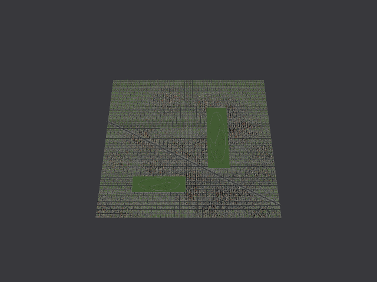

City buildings / quick
city-clustered-green-10000
Clustered city districts with native tree rows, groves and meadow clearings.
Recipe and source notes
Exactly ten thousand buildings, native valley-oak leaf-cell prototypes shared across park groves and street rows, curved park paths and planted vacant lots. Authored metre-scale scenery with connected elevated highways.
Detail levels: hull quick
Rendered on the native GPU path. Render record / Scene YAML